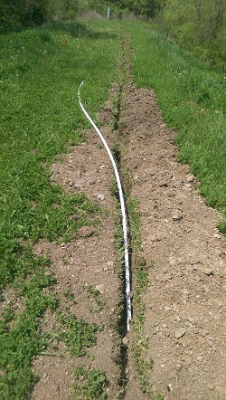
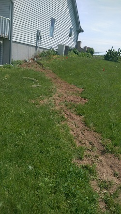
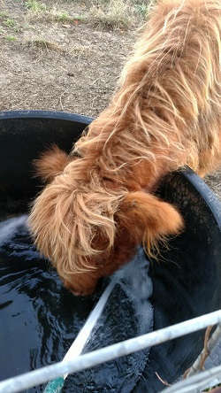

Livestock watering
It is not uncommon for farms in this area to have rural water running to the house, but a separate well for animal/barn water. We actually have two wells on our property; one in use not far from the barn, and another in the back pasture. The near-barn well had a relatively new pump installed when we moved in, which was a great treat, but there was no power running to the pump.
The problem
The previous owner had had an extra power meter connection run to the well from a nearby transformer. This made the power source very reliable, but also expensive - there is a monthly fee to have a connection like that, along with the costs of the power itself. So we decided to instead run power from our house out to the well pump, eliminating the extra monthly cost.
The solution
 The distance from our house to the meter and connection to the well pump (we'll call it the power box) is about 600ft; long enough that hand-digging a trench 18" deep would be miserable, but not so long that it justified bringing in a crew (we thought). So we rented a small trencher, spray painted a line marking the most direct route from the house to the connection, and went at it.
The small trencher we rented was too small. At its deepest setting it could barely get 18-20", and we needed at least that depth to meet code in terms of keeping the line below the frost line and such. The ground was also extremely hard, and in some places rocky, making things worse. We managed about the first 300-350ft, getting at least 12-16" depth. But the power had to run over our pond's dam, which was (as it should be) extremely hard-packed clay. This was beyond the capabilities of the trencher, and we had to do the last couple hundred feet by hand.
Running the cable itself wasn't so difficult. Eric and his father, an electrical engineer, determined the type of wire we'd need to be able to carry enough power over the distance. The wire was bought, and we bought 1" PVC pipe that we threaded it through, sealed with glue, and laid in the trench. On the house end of things, Eric and his father bore through the concrete wall of the tuck-under garage (where the circuit breaker is) to connect the line to the breaker. On the well pump end, we installed a riser from the buried wire up to the electric box and wired it in there. Fortunately, from the box to the well pump itself was about another 30ft, but the wire was still there and we didn't need to do any more work.
The project was a success in that we got power out to the pump, but given all the time and expense of trenching and digging, it will take an annoyingly long time to get back the cost. It was also a mildly unpleasant and unhappy and frustrating day (week) for those working on it! Were we to find ourselves in the same situation again, at the least we'd spend the extra money to rent a bigger, meaner trencher.
The next set of problems
The drama continued later into the year. At the power box by the well pump, there's a switch to turn the pump on and off. We just left it on, at first. There is one hydrant that the well connects to, right at the edge of the small pasture by the barnyard. Margaret went cow shopping in late October, and would be bringing the cows home in early November. Eric decided to check on the status of the pump a few days beforehand, only to discover that the pump wasn't working.
What we found out was that the pump installed was too powerful for the well. Different types of well pumps are appropriate for different depths of well, distance (both horizontal and vertical) to the 'end point' (in our case the hydrant by the pasture), and desired water load. Our well is down a small incline, perhaps 10-15ft of gain, and maybe 60ft horizontal distance from the hydrant. The pump the previous owner installed is more suitable for 100 feet of rise and/or run. We assume it was chosen because its narrow shape made it easier to get into the well - the cement cap of the well didn't need to be removed. The downside is that if it's left powered on all the time, it keeps pumping. Normally there's a pressure-based check valve that will tell the pump to quit working, once the system is pressurized enough. Because there's not enough rise and run in our little system, insufficient pressure would build up to trigger the pump to stop. The old one ran until it burned out its motor.
Luckily with only a few days before the cows arrived, we found a similar pump from a local dealer, and installed it. Again, it's too powerful of a pump, but now we only turn it on (by flipping the aforementioned switch in the power box) when we're using it. It's not a very convenient solution, as human forgetfulness could ruin the system. It's also not optimal for the animals - normally, a stock tank could be installed with a float valve; the valve would trigger the pump to pump more water until the level was high enough, then it would shutoff. Thus the animal water is nearly maintenance-free. With our situation, someone has to manually refill the water daily (or twice daily during the summer). In the future we hope to replace the pump, which will improve the convenience and reduce the headache of our system, but it works well for now.